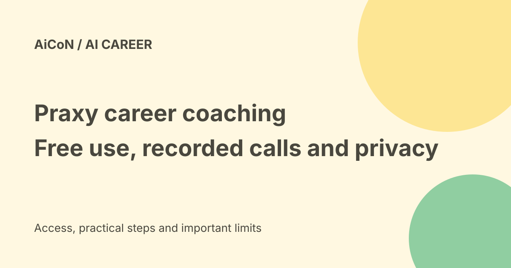

Praxy WhatsApp career coach: free limits, calls and resume privacy
Praxy is a career-coaching service from India-based Praxel Ventures. It offers WhatsApp chat and voice practice for resumes, interviews and career questions. Its pricing page says current use is free with fair limits, but your messages, resumes and recorded calls are not kept only on your phone.

What Praxy can help with
The current feature page lists WhatsApp career coaching, voice mock interviews, resume feedback, job search and remembered career context. You can practise an interview answer, compare an offer or ask which evidence is missing from a resume.
The company advertises 3M+ job listings from 53 sources. This is its own coverage claim, not a count independently reproduced here. The public job page returned listings, but that does not prove each role is open, genuine or suitable for applicants in India.
Use original employer pages to check a role's status, location, work permission, pay and application route. Never pay a recruiter simply because a job appears in an AI shortlist.
Free access and limits
The pricing page says there is no plan to choose, card requirement, checkout or expiring trial right now. It says coaching, interview practice, resume feedback and job search are free, with fair-use limits.
No numeric daily message, call or job-match cap is published on that page. The company expects a future paid heavy-use tier, without a price or date, and says the core will remain free. That is a vendor statement about future plans, not a guarantee of permanent terms.
Carrier data and phone charges can still apply. Read future plan changes before agreeing to anything paid.
Adults and India fit
Both current terms and privacy policy require users to be 18 or older. Praxel Ventures is based in India and provides an Indian contact route. We did not start a WhatsApp conversation, call the service, test supported languages or verify access on a particular account.
Use the official website's Chat with Praxy entry rather than a forwarded number or an unrelated service with a similar name. Starting contact and accepting its terms are your choices.
A careful first session
- Read the current pricing, privacy and terms pages.
- Choose one practice goal, such as a short introduction.
- Start with a fictional job example or a resume with unnecessary personal details removed.
- Use the official chat route, review its first-message notice and decide whether to accept.
- Ask for feedback, not fabricated experience or an automatic application.
- Before a voice call, listen for the recording notice and decline if you are not comfortable.
- Check the advice against your real experience and the employer's own requirements.
This guide did not send a resume, contact Praxy, create an account or agree to its terms.
Where career data goes
The policy lists phone and account identifiers, resumes and extracted text, WhatsApp messages and media, career goals, call audio, transcripts and summaries. Sensitive details may be present in a resume even when you did not label them sensitive.
Relevant content is sent to third-party AI and infrastructure processors. The policy names examples including OpenRouter and underlying inference providers, Google Gemini, OpenAI for embeddings, voice providers, Meta/WhatsApp and cloud hosting. This is not local-only processing.
The terms say providers are not authorised to train their own models on your content for their own purposes except a separate explicit opt-in. The privacy policy separately mentions contractual carve-outs. Review the current policy or request the current processor list rather than treating the marketing page as an absolute no-training promise.
Recording, retention and deletion
Voice notes are transcribed. Recorded calls produce audio, transcripts and summaries. The terms say recording is disclosed at the start and can be declined; do not continue a recorded call if you do not want that processing.
The policy says account deletion triggers deletion of conversations, resumes, interviews, goals and uploaded files, with requests to processors too. Legal records and certain backups or anonymised records have exceptions. It also allows requests to delete specific recordings or conversations.
STOP opts out of messages and STOP CALLS of calls, according to the terms. Opting out is not the same as deleting your stored resume or history. Use the privacy contact or service controls for a deletion request.
Live features versus future plans
The roadmap lists a web app, resume generation and role tailoring, Auto Apply, dynamic portfolios, proof of skill and mobile apps as next-three-month targets. Do not treat those target windows as finished features. Existing resume feedback is different from the planned resume-generation workflow.
Its private MCP feature is a separate read-only connection for career records. Connecting another assistant can expose those records to that assistant's service. We did not connect it.
Frequently asked questions
Is a card needed now?
The current pricing page says no.
Are calls recorded?
The policy says voice coaching calls are recorded and transcribed, with a notice and a way to decline.
Does STOP erase everything?
No. Message opt-out and data deletion are separate.
Does it guarantee a job or salary?
No. Treat the coaching as preparation and verify job details yourself.
What changed since the earlier post?
The short and full Praxy archive posts are combined here. This guide adds adult eligibility, unspecified numeric caps, recorded-call retention, processor sharing and the distinction between current features and roadmap promises.
Sources: Official product page · Current pricing · Live features and roadmap · Privacy policy · Terms of service · Public job search. Checked 8 October 2026.